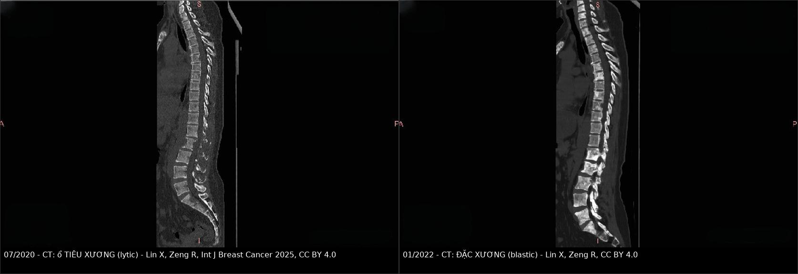
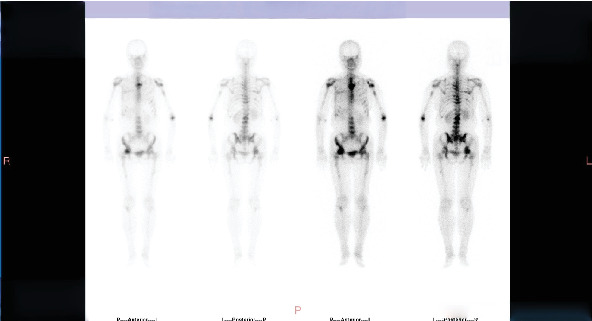
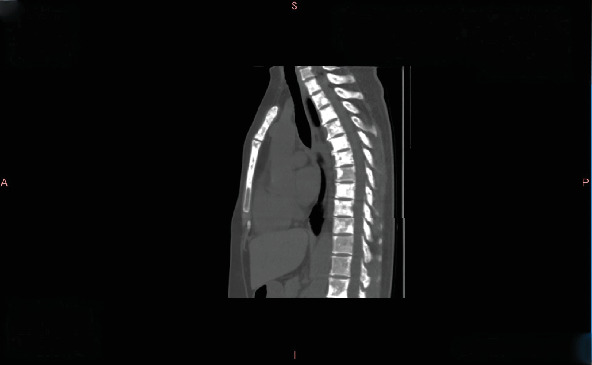

1615 — Di căn xương ở ung thư vú: đặc xương lành hóa hay tiến triển? / Breast cancer bone metastases: blastic healing versus progression
Tags: pattern:dac-xuong pattern:tieu-xuong pattern:gia-tien-trien pattern:gia-lanh-hoa vung:co-xuong vung:cot-song score:RECIST-1.1 score:MDA score:Mirels protocol:CT-xuong protocol:MRI-tuy-xuong protocol:xac-hinh-xuong incidentaloma:not-dac-xuong
Mức chắc chắn (certainty): tổng hợp y văn (literature synthesis) — đọc trực tiếp toàn văn các bài mở qua Europe PMC/PMC (J Cancer 2010; Cancers 2025; J Bone Oncol 2026; BMC Musculoskelet Disord 2025; Int J Breast Cancer 2025; Front Oncol 2026), có ca nguyên văn dùng cho quiz (ảnh CC BY 4.0). Mọi con số dưới đây lấy từ chính các bài đó; chỗ nào là quy ước đọc phim chứ không phải số từ nghiên cứu đều ghi rõ.
1. Tổng quan — vì sao "xương đặc thêm" lại là câu hỏi khó nhất sau điều trị
- Tần suất: xương là nơi di căn hay gặp nhất của ung thư vú; 65–75% bệnh nhân ung thư vú giai đoạn muộn có di căn xương (Bader G và cs., Front Oncol 2026; Lin X, Zeng R., Int J Breast Cancer 2025). Di căn xương gây biến cố xương (skeletal-related event — SRE): gãy bệnh lý, chèn ép tủy, xạ trị vào xương, phẫu thuật xương.
- Vòng luẩn quẩn tế bào – xương (vicious cycle) quyết định vì sao tổn thương đổi hình thái theo thời gian:
- Tế bào u tiết PTHrP, IL-6, IL-11 → kích thích RANKL trên tạo cốt bào → hủy xương kiểu tiêu xương (osteolytic). Đây là kiểu hay gặp và "ồn ào" nhất trên phim.
- Đồng thời u tiết endothelin-1, DKK-1 và ức chế Wnt → tạo xương phản ứng = đặc xương (osteoblastic/sclerotic).
- Hai quá trình xảy ra đồng thời trong cùng một đốt sống: phần lớn ổ di căn vú là hỗn hợp tiêu xương – đặc xương, không phải một thể thuần nhất.
- TẠI SAO hình ảnh trông như vậy (vật lý + mô bệnh):
- CT: tín hiệu = hệ số suy giảm tia X của mô khoáng hóa. Xương xốp bình thường đã có bè xương; khi tạo cốt bào lấp bè xương bằng xương mới dày đặc → HU tăng, đốt sống "trắng lên". Khi hủy cốt bào ăn mất bè xương → HU giảm, vùng tối đi. Vì vậy "trắng thêm" không đồng nghĩa nặng thêm — nó có thể là xương lành đang lấp lại ổ tiêu xương.
- MRI T1W: tủy vàng trưởng thành chứa ~80% mỡ nên sáng hơn cơ và đĩa đệm. Tế bào u thay tủy → T1 tối (thay mỡ bằng nước/tế bào). Khi điều trị thành công, mỡ tái lập trong tủy → T1 sáng trở lại = dấu lành hóa, xuất hiện trước khi CT đổi mật độ nhiều tháng.
- DWI/ADC: tế bào u dày đặc → ADC thấp; mô xơ – xương lành hóa → ADC tăng. Đây là lý do DWI phân biệt mô u còn sống với sẹo xơ tốt hơn T1/T2.
- Xạ hình xương (bone scan, Tc-99m MDP): phóng xạ gắn vào hoạt tính tạo xương. Cả u đang phá xương và xương đang lành lại đều làm tăng tạo xương → tăng uptake không định hướng được lành/tiến triển. Đây chính là nguồn gốc của flare.
- Vì sao phải phân biệt cho đúng: gọi sai "tiến triển" → đổi phác đồ oan (bỏ một thuốc đang hiệu quả); gọi sai "lành hóa" → bỏ sót tiến triển thật ở một bệnh nhân còn nhiều lựa chọn điều trị. Cả hai đều là lỗi ở bước đọc phim, không phải ở bước chọn thuốc.
2. Mẫu hình (pattern) + chẩn đoán phân biệt theo bối cảnh điều trị (Gamut)
- Khuôn 1 — Đốt sống/xương chậu "trắng lên" trong 0–6 tháng đầu điều trị, bệnh nhân ĐANG đỡ đau, không có tổn thương mới ở nơi khác. Gamut: lành hóa đặc xương (blastic healing) vs flare đặc xương (osteoblastic flare) vs tiến triển đặc xương thật. Chốt: bệnh cảnh + so đúng vị trí từng ổ + PET/DWI, không dựa vào một phim.
- Khuôn 2 — Xạ hình xương tăng uptake ở ổ CŨ trong 3 tháng đầu sau đổi thuốc. Gamut: scintigraphic flare vs tiến triển thật vs giả tăng do kỹ thuật (khác liều, khác thời gian lưu, mất nước). Chốt: đối chiếu CT/MRI cùng thời điểm — flare thì CT không xấu đi.
- Khuôn 3 — Ổ TIÊU XƯƠNG mới hoặc rộng ra, bờ không đặc xương. Gamut: tiến triển tiêu xương (gần như luôn là tiến triển) vs hoại tử xương do bisphosphonate/denosumab (MRONJ) nếu ở xương hàm vs gãy xẹp cấp tính làm biến dạng đốt sống. Chốt: tiêu xương mới = tiến triển cho đến khi chứng minh ngược.
- Khuôn 4 — Đau xương khu trú + nguy cơ gãy xương dài. Gamut: di căn xương nguy cơ gãy tới hạn vs gãy do loãng xương/steroid vs bệnh Paget vs nhồi máu xương. Chốt: Mirels + vùng chuyển tiếp + có/không phá vỏ.
- Khuôn 5 — Một ổ đặc xương đơn độc, không đau, không tiền sử ung thư. Gamut: đảo xương (bone island/enostosis) vs di căn đặc xương vs xơ hóa đầu xương do thoái hóa. Chốt: bờ tua gai/nhánh (brush border) + ổn định nhiều năm = đảo xương.
- Gợi nhớ "ĐẶC – KHÔNG CHẮC LÀ XẤU": Đúng vị trí cũ · Ặc (đang đỡ đau, marker giảm) · Có đối chiếu CT và PET/DWI · Không có ổ tiêu xương mới · Hỏi đúng mốc thời gian so với lần đổi thuốc · Ôn định ≥ 2 lần chụp cách ≥ 3 tháng · Nếu còn nghi → sinh thiết ổ mới, không đổi phác đồ mù.
3. Bảng so sánh phân biệt (ma trận đối chiếu)
| Thực thể (entity) | Hình ảnh điển hình | Chốt vào (rule-in) | Chốt loại (rule-out) | Gợi ý xác nhận |
|---|---|---|---|---|
| Lành hóa đặc xương (blastic healing) | Ổ tiêu xương cũ lấp dần bằng xương đặc, bờ đặc hóa dày lên, kích thước không tăng; MRI: mỡ tủy tái lập (T1 sáng lại); PET: giảm FDG | Cùng vị trí ổ CŨ + đặc hóa tiến triển + có ≥ 1 dấu hiệu đáp ứng khác (đau giảm, marker giảm, PET giảm) | Xuất hiện ổ ở vị trí MỚI, hoặc ổ cũ nở rộng ra ngoài bờ xương → không phải lành hóa | CT xương + MRI T1/DWI + PET 3–6 tháng |
| Flare đặc xương (osteoblastic flare) | Ổ đặc xương mới thấy trong 3 tháng đầu sau bắt đầu/đổi điều trị, kèm dấu hiệu đáp ứng ở nơi khác | Trong 3 tháng đầu + tổn thương cũ KHÔNG tiến triển + lâm sàng đỡ | Có bất kỳ ổ cũ nào tiến triển, hoặc đau tăng, hoặc marker tăng → không được gọi flare | Chụp lại 3 tháng; PET nếu còn nghi |
| Tiến triển đặc xương | Ổ đặc xương to ra, đặc thêm không đều, phá vỏ, chèn ép, thường kèm ổ tiêu xương mới | Nở rộng/thêm ổ mới ngoài vùng cũ + có thành phần tiêu xương hoặc mô mềm | Đặc hóa đều, giới hạn trong bờ xương cũ, không mô mềm → nghiêng lành hóa | CT + MRI (mô mềm, DWI) + PET |
| Tiến triển tiêu xương | Ổ giảm HU, mất bè xương, bờ không đặc hóa, có thể phá vỏ/sụp đốt | Ổ tiêu xương MỚI hoặc rộng ra ≥ 25% (MDA) | Ổ tiêu xương cũ đặc hóa dần, không rộng thêm → lành hóa | CT xương; MRI nếu nghi chèn ép tủy |
| Flare xạ hình (scintigraphic flare) | Uptake tăng ở ổ cũ, trong 3 tháng đầu sau điều trị, sau đó giảm dần | Tăng trong ≤ 3 tháng + CT/MRI cùng lúc KHÔNG xấu đi | Uptake tăng kèm ổ mới trên CT, hoặc tăng sau 6 tháng → tiến triển | Luôn đối chiếu CT/MRI; không đọc xạ hình đơn độc |
| Gãy xẹp đốt sống do loãng xương/steroid | Xẹp đồng đều, bè xương thưa, khí trong đốt sống (intravertebral vacuum), không phá cuống | Bảo tồn cuống sống + khí trong đốt + xẹp đều | Phá cuống sống, phá vỏ sau, mô mềm cạnh sống → di căn | MRI (phù tủy, không có khối); CT cuống sống |
| Đảo xương (bone island) | Nốt đặc xương bờ tua gai/nhánh, đậm độ đồng nhất, < 2 cm, không đau | Bờ tua gai + ổn định trên phim cũ + không tăng trên xạ hình | Bờ tròn nhẵn, lớn dần, đau, uptake tăng mạnh → di căn/Paget | So phim cũ; CT; xạ hình |
| Bệnh Paget xương | Xương to ra, vỏ dày, bè xương thô, có thể đặc xương lan rộng | Xương TO RA + vỏ dày + bè xương thô | Kích thước xương bình thường, chỉ đổi mật độ → di căn | X-quang/CT; ALP; so phim cũ |

Cùng một bệnh nhân, cùng chuỗi CT xương dọc cột sống. Trái (07/2020): nhiều ổ tiêu xương thân đốt sống ngực–thắt lưng. Phải (01/2022): sau 18 tháng exemestane–capecitabine + denosumab, các thân đốt đặc xương lan tỏa — đây là lành hóa, không phải "di căn đặc xương mới". Nguồn: Lin X, Zeng R., Int J Breast Cancer 2025, CC BY 4.0. Ảnh ghép letterbox, giữ nguyên tỷ lệ.Ba câu hỏi bắt buộc trước khi gọi "tiến triển"
- Vị trí: ổ này đã có từ phim trước chưa? (Ổ cũ đặc thêm ≠ ổ mới.)
- Hình thái: đặc hóa đều trong bờ xương cũ hay nở ra/phá vỏ/có mô mềm?
- Bằng chứng ngoài hình ảnh: đau, ALP, CEA/CA 15-3, PET — cùng chiều hay ngược chiều?
4. Protocol chụp + hệ phân độ/điểm chuẩn hóa
- CT là chuẩn để ĐO và theo dõi di căn xương (RECIST 1.1 gọi CT là "phương pháp tốt nhất hiện có và tái lập được" để đo tổn thương đích).
- Cửa sổ xương W 1500–2000 / L 300–500, lát ≤ 2 mm qua vùng tổn thương; luôn kèm cửa sổ mô mềm để tìm thành phần mô mềm ≥ 10 mm — chỉ khi có thành phần này tổn thương xương mới đo được theo RECIST 1.1.
- Chụp cùng máy, cùng kVp, cùng tái tạo ở các lần theo dõi: đậm độ xương phụ thuộc kVp, đổi kVp làm sai lệch so sánh "trắng hơn".
- MRI cột sống: T1W dọc + T2W fat-sat/STIR + DWI (b=0/800–1000) và ADC; so sánh tín hiệu tủy với đĩa đệm cùng đốt (mốc nội tại, không phụ thuộc cửa sổ).
- Xạ hình xương Tc-99m MDP: dùng để sàng lọc toàn thân, không dùng đơn độc để kết luận đáp ứng — luôn đối chiếu CT/MRI cùng thời điểm.
- PET/CT FDG: hữu ích khi CT mơ hồ; lưu ý ổ đặc xương đặc hoàn toàn có thể FDG âm dù còn tế bào u.
- Ba hệ tiêu chuẩn và ngưỡng số học:
| Hệ | Đối tượng | Ngưỡng đáp ứng / tiến triển |
|---|---|---|
| RECIST 1.1 | Tổn thương đo được (di căn xương chỉ đo được khi có thành phần mô mềm ≥ 10 mm) | PR: giảm ≥ 30% tổng đường kính. PD: tăng ≥ 20% và ≥ 5 mm tuyệt đối. Di căn xương thuần = không đo được; ổ FDG mới không tương ứng bất thường có sẵn = PD |
| MDA (MD Anderson) | Di căn xương thuần, đánh giá trên X-quang/CT/MRI + xạ hình | CR: đặc hóa hoàn toàn ổ tiêu xương + mật độ xương bình thường + tín hiệu MRI bình thường + xạ hình bình thường. PR: vành đặc hóa/đặc hóa một phần, hoặc giảm ≥ 50% tổng đường kính vuông góc của tổn thương không đo được. PD: tăng ≥ 25% hoặc ổ mới |
| PERCIST | Đáp ứng chuyển hóa bằng FDG PET | Dùng khi hình thái học không đổi nhưng chuyển hóa đổi — "đáp ứng mà không có đáp ứng giải phẫu" |
flowchart TD
A["Ổ đặc xương thấy trên CT sau điều trị"] --> B{"Đã có trên phim trước, cùng vị trí?"}
B -->|"Chưa có"| C{"Trong 3 tháng đầu sau đổi thuốc<br/>và bệnh nhân đang đỡ?"}
C -->|"Có"| D["Flare đặc xương - chụp lại 3 tháng<br/>KHÔNG đổi phác đồ"]
C -->|"Không"| E["Tiến triển - đánh giá lại điều trị"]
B -->|"Đã có"| F{"Đặc hóa đều trong bờ xương cũ,<br/>không phá vỏ, không mô mềm?"}
F -->|"Có"| G["Lành hóa đặc xương<br/>xác nhận bằng PET hoặc DWI giảm"]
F -->|"Không"| H{"Có ổ tiêu xương mới<br/>hoặc nở rộng/phá vỏ?"}
H -->|"Có"| E
H -->|"Không"| I["Mơ hồ - MRI DWI + PET<br/>và hội chẩn trước khi kết luận"]
- Mirels — nguy cơ gãy xương dài (4 biến: vị trí, đau, thể tổn thương, kích thước; tối đa 12 điểm):
- ≤ 7 điểm: nguy cơ gãy 4%, dương tính giả 22% → không cố định dự phòng.
- 8 điểm: nguy cơ gãy 15%, dương tính giả 6% → vùng xám, quyết định theo lâm sàng.
- ≥ 9 điểm: nguy cơ gãy 33%, không dương tính giả → chỉ định cố định dự phòng.
- Độ chính xác: Mirels Se 66,7–88% / Sp 38–47,9%; CTRA Se 100% / Sp 60,6%; FEA Se 80–100% / Sp 67–86%. Mirels nhạy nhưng kém đặc hiệu → dùng để sàng lọc, không để một mình quyết định mổ.
- Cạm bẫy đo: cùng một tổn thương, điểm kích thước trên X-quang cao hơn trên CT (trung bình 2,35 vs 2,02 điểm) — X-quang phóng đại và chỉ thấy một mặt phẳng; đọc Mirels trên CT mà không nói rõ nguồn ảnh sẽ cho điểm khác nhau.
5. Biến thể bình thường và cạm bẫy
- Đảo xương (bone island) 1–2 cm ở xương chậu — có thể dương tính giả trên xạ hình; bờ tua gai, ổn định nhiều năm. So phim cũ là bước rẻ nhất và hiệu quả nhất.
- Xơ hóa đầu đốt sống do thoái hóa (degenerative endplate sclerosis) nằm ngay sát đĩa đệm, đối xứng, có mỏ xương; di căn nằm trong thân sống, lệch tâm, không đối xứng.
- "Trắng hơn" do khác kVp/tái tạo — cùng một ổ di căn có thể trông đậm hơn chỉ vì lần chụp sau dùng kVp thấp hơn. Luôn so trên cùng cửa sổ, cùng mức, cùng máy.
- Satisfaction of search: thấy một ổ đặc xương "đẹp" rồi dừng, bỏ sót ổ tiêu xương mới ở đốt khác — đọc toàn bộ khung xương trước, rồi mới kết luận từng ổ.
- Xạ hình tăng đơn độc: trong 3 tháng đầu sau đổi thuốc, tăng uptake không đủ để gọi tiến triển. Ca nguyên văn của bài này: 03/2024 xạ hình cho thấy "tăng cường độ và vùng tập trung rộng hơn", nhưng CT ngực cùng thời điểm không đổi → kết luận ổn định và bệnh nhân tiếp tục được hưởng lợi từ phác đồ hiện tại.
- Ổ đặc xương "đặc hoàn toàn" có thể FDG âm — PET âm không loại trừ mô u còn sống trong xương đặc; ngược lại, ổ FDG dương mới theo RECIST 1.1 là PD.
- MRONJ (hoại tử xương hàm do thuốc) ở bệnh nhân đang dùng denosumab/bisphosphonate: đau răng, lộ xương, ổ tiêu xương khu trú xương hàm — khác di căn; đừng gộp vào "tiến triển xương" rồi đổi phác đồ ung thư.
6. Tự lượng giá — Blind Quiz
Ca 1 — Nữ 46 tuổi, ung thư vú, đang điều trị; hai phim CT cách nhau 18 tháng. Nhìn phim, mô tả trước khi mở đáp án.
- Gợi ý lâm sàng: đau lưng giảm dần, không có triệu chứng thần kinh mới.
- Câu hỏi: (1) Hình thái tổn thương thay đổi theo hướng nào? (2) Ba chẩn đoán phân biệt? (3) Dấu hiệu nào chốt?
Bấm để hiện đáp án (findings + chẩn đoán)
- Dấu hiệu: 07/2020 — nhiều thân đốt ngực–thắt lưng có vùng giảm đậm độ, mất bè xương (tiêu xương). 01/2022 — các thân đốt đặc xương lan tỏa, giới hạn trong bờ xương cũ, không có ổ mới ngoài bờ, không mô mềm cạnh sống.
- Chẩn đoán: lành hóa đặc xương (blastic healing) sau exemestane–capecitabine + denosumab.
- Vì sao: xương mới lấp ổ tiêu xương làm tăng HU — "trắng thêm" ở đúng vị trí cũ là dấu đáp ứng, không phải tiến triển.
- Chốt loại tiến triển: không có ổ tiêu xương mới, không nở rộng ngoài bờ xương, không mô mềm; lâm sàng đỡ đau.
- Nguồn ảnh: Lin X, Zeng R., Int J Breast Cancer 2025, Fig. 2 và Fig. 4, CC BY 4.0.
Ca 2 — Cùng bệnh nhân, 03/2024: xạ hình xương báo "nặng hơn". CT ngực cùng ngày ở dưới. Kết luận thế nào?


- Câu hỏi: Có gọi tiến triển xương không? Vì sao có/không? Cần làm gì tiếp?
Bấm để hiện đáp án
- Dấu hiệu: xạ hình — một số ổ tăng cường độ và vùng tập trung rộng hơn so với lần trước. CT cùng thời điểm — các ổ đặc xương không thay đổi so với 2022.
- Kết luận của nhóm điều trị: ổn định xương (stable bone lesions); bệnh nhân tiếp tục phác đồ.
- Vì sao: xạ hình phản ánh hoạt tính tạo xương, không phản ánh khối u; tăng uptake đơn độc — nhất là khi CT không xấu đi — không đủ tiêu chuẩn tiến triển.
- Cạm bẫy: xạ hình là phương tiện sàng lọc, không phải phương tiện kết luận đáp ứng. Muốn gọi tiến triển phải có ổ mới trên CT/MRI hoặc tổn thương đo được tăng ≥ 20% và ≥ 5 mm.
- Nguồn ảnh: Lin X, Zeng R., Int J Breast Cancer 2025, Fig. 5 và Fig. 6, CC BY 4.0.
Ca 3 — Nữ 58 tuổi, đau đùi phải 3 tuần, tiền sử ung thư vú di căn xương. X-quang: ổ tiêu xương 3,5 cm ở thân xương đùi, chiếm > 2/3 đường kính, đau khi đi lại.
Bấm để hiện đáp án
- Tính Mirels: vị trí thân xương đùi (3) + đau khi đi lại (2–3) + thể tiêu xương (2) + kích thước > 2/3 đường kính (3) = 10–11 điểm.
- Ngưỡng: ≥ 9 điểm → nguy cơ gãy 33%, không dương tính giả → chỉ định cố định dự phòng.
- Phản biện: Mirels Sp chỉ 38–47,9% nên dương tính thì đáng tin, âm tính thì không loại trừ; nếu điểm 8 (vùng xám) → cân nhắc CTRA/FEA hoặc hội chẩn cơ xương khớp.
- Cạm bẫy: nếu chỉ có CT mà không có X-quang, điểm kích thước sẽ thấp hơn (trung bình 2,02 vs 2,35) → dễ đánh giá thấp nguy cơ hơn thực tế.
Bài liên quan chéo
- 511 – Đau cơ–khớp do thuốc ức chế aromatase (AIMSS) & sức khỏe xương (phân biệt đau do thuốc với đau do di căn)
- 522 – Theo dõi sau điều trị ung thư vú & tái phát muộn
- 178 – Di căn xương RCC: biến chứng cơ học & can thiệp
- 306 – Đọc phim sau SBRT di căn xương: lành hóa vs tái phát
- 581 – Di căn não–xương trong ung thư phụ khoa
- 1618 – Di căn da & thành ngực của ung thư vú
Không dùng để chẩn đoán độc lập khi chưa có người hướng dẫn. Mọi ngưỡng số học ở trên là ngưỡng nghiên cứu/thử nghiệm; quyết định đổi hay giữ phác đồ thuộc về hội chẩn ung thư, không thuộc về một lần đọc phim.